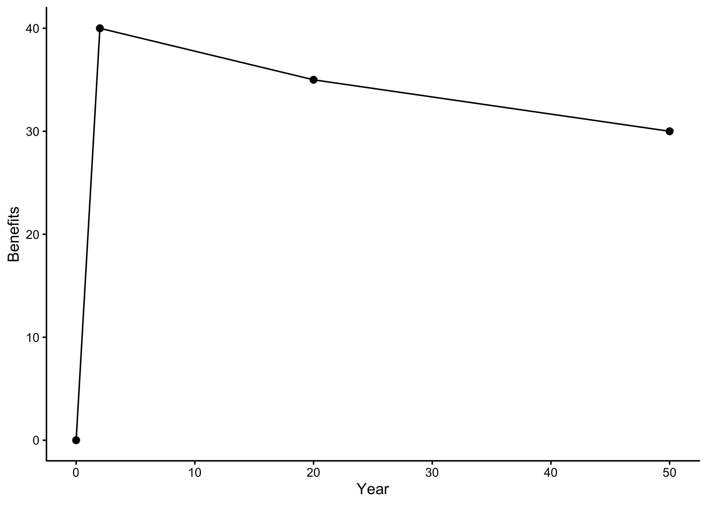

18 Annualizing benefits and costs with ecorest and EngrEcon
This module will teach you how to use the ecorest and EngrEcon packages in R to efficiently and reproducibly calculate annualized benefits and costs for restoration project planning:
EngrEcon R package.Authors: Ed Stowe (Writing, code), Darixa Hernandez-Abrams (benefits code), Kyle McKay (benefits code), Liya Abera (costs code) Cost annualization write-up from Utoy Creek: Kyle McKay, Stephen Phillips, Liya Abera, and Garrett Menichino
Last update: 2026-02-05
Acknowledgements:
18.1 Learning objectives
- Understand why annualization is important for making comparisons of costs or benefits among projects
- Learn how to calculate annualized ecological benefits with the
ecorestpackage - Learn how to calculate annualized costs using the
EngrEconpackage
18.2 Background on annualization
Annualization is a technique for determining the costs and benefits of projects on an annual time scale, regardless of the overall time horizon of the project. Calculating annualized costs and benefits is an important component of restoration planning because it enables a fair comparison between alternative projects whose costs and/or benefits occur at different periods of time following implementation.
18.3 Annualizing benefits
Annualization of benefits can be easily carried out in the ecorest package. Along with ecorest we will also load the tidyverse package for plotting/wrangling and the EngrEcon package for cost annualization.
library(tidyverse)
library(ecorest)
library(EngrEcon)
library(scales) # Needed to convert costs to dollars for table outputsLet’s imagine a simple scenario with ecosystem or restoration benefits calculated at four time periods from year 0 to year 50. We can store these benefits in a dataframe and plot them with ggplot as follows:
#User-specified time intervals
ben_df <- data.frame(year = c(0,2,20,50),
ben = c(0,40,35,30))
p <- ggplot(ben_df)+
geom_point(aes(year, ben), size = 2)+
geom_line(aes(year, ben))+
labs(x = "Year", y = "Benefits")+
theme_classic()
p
In essence, the total benefits of the project can be thought of as the area under this curve, which we can add to our plot using the geom_area() function.
What annualization does is take the total shaded area under the benefits curve, and it divide by the number of years. This essentially looks like carving the area into triangles and rectangles, calculating the areas of these shapes and adding them together, and finally dividing to get an annual benefit. The df_rect code below simply creates a dataframe with the coordinates for two rectangles to add to our plot for visualization purposes.
df_rect <- tibble(xmin = ben_df$year[2:3],
xmax = ben_df$year[3:4],
ymin = c(0,0),
ymax = ben_df$ben[3:4])
p + geom_rect(data = df_rect,
aes(xmin = xmin, xmax = xmax, ymin = ymin, ymax = ymax),
fill = NA, lty = "dashed", color = "black")The ecorest package provides an easy way to achieve benefit annualization with the annualizer function, which computes “time-averaged quantities based on linear interpolation.” Linear interpolation here just means that we connect the different points in time with straight lines in order to calculate the overall area.
Inputs for the annualizer function are 1) a vector of time intervals and
2) a vector of values to interpolate.
annualizer(ben_df$year, ben_df$ben)## [1] 33.8We can see, therefore, that the annualized ecological benefits of this toy project are 33.8 units (e.g., acres, habitat units, etc.).
18.4 Annualizing costs
Cost annualization is carried out so that fair cost comparisons can be made among alternative project plans with costs incurred at different time points.
Cost annualization procedures will vary among projects, but typically involves first calculating the present value of all project costs, including operation and maintenance costs that will be incurred at future time periods, and interest during construction costs. Present value means the current value of a future sum of money, and are calculated by discounting the future value by how much the money could be earned if invested. Once present values for all costs have been calculated, then annualized costs can be calculated from these present values. Annualized costs will then serve as the basis for comparing the cost differences among project alternatives.
To provide a real-world example of how to carry out cost annualization, we will use data from a feasibility study of potential restoration actions in Utoy Creek, a degraded watershed in Atlanta, GA. The USACE’s Mobile District is partnering with the city of Atlanta to carry out the work. Cost effectiveness and Incremental Cost analysis (CEICA) were used to guide development of a recommended analysis and CEICA requires the use of annualized cost (and benefit) data. See the 19 for a full implementation of CEICA.
We will annualize cost data using the EngrEcon R package. Note: a web application also exists for conducting these calculations that leverages the same R package.
18.4.1 Cost data
In order to carry out cost annualization, we will start by storing the federal discount rate of 3.0% in an object called discount. Then, we load the cost data and inspect it with the glimpse function fromdplyr.
# Set federal discont rate for water resources projects in FY24
discount <- 0.03
# Read in initial costs
costs <- read_csv("data/utoy_cost.csv")
glimpse(costs)## Rows: 31
## Columns: 9
## $ SiteID <chr> "17F2M", "17F2M", "17F2M", "17F2M", "17D2E", "17D2E", "17D2E", "17D2E", "17…
## $ SiteAction <chr> "FWOP", "Alternative1", "Alternative2", "Alternative3", "FWOP", "Alternativ…
## $ Description <chr> "No action", "Concrete channel removal with extensive riparian restoration"…
## $ ConstrDuration <dbl> 0, 10, 9, 11, 0, 14, 14, 2, 0, 12, 12, 2, 0, 6, 5, 2, 0, 4, 4, 2, 0, 8, 14,…
## $ RipAreaFt2 <dbl> 0.0, 94150.0, 33894.0, 232812.0, 0.0, 916856.4, 804130.4, 664130.4, 0.0, 43…
## $ ReachLengthFt <dbl> 0.000, 2639.110, 2378.154, 2639.110, 0.000, 3610.575, 3610.575, 3610.575, 0…
## $ ConstrCost <dbl> 0, 776047, 691092, 798779, 0, 1070854, 1065670, 276233, 0, 1002697, 880983,…
## $ MonitoringCost <dbl> 0, 60000, 56000, 48000, 0, 48000, 48000, 48000, 0, 48000, 48000, 48000, 0, …
## $ AdManCost <dbl> 0, 77605, 69109, 79878, 0, 160628, 106567, 27623, 0, 150405, 132147, 38642,…This dataset has several columns pertaining to the site and alternative plan characteristics (e.g., ConstrDuration or the duration of construction), as well as three cost columns: ConstrCost, MonitoringCost, and AdManCost, which refer to the costs of construction, monitoring and adaptive management, respectively.
18.4.2 Operations and maintenance costs
Operations, maintenance, repair, replacement, and rehabilitation (OMRRR) costs occur periodically over a project’s lifespan, so we first need to calculate the present value of these costs before we can calculate annualized costs. For the Utoy project, the present value of OMRRR costs were estimated assuming four common management practices:
Quarterly site visits for trash removal and minor maintenance of small restoration and educational features. Cost: $10,000 per year.
Bi-annual site visits to include a simple inspection of the restoration work. Cost: $4.00 per linear foot of stream every two years.
Invasive species removal. Cost: $15,000 every 10 years.
Repair of structural restoration features (e.g., rock, wood, and earth work). Cost: 10% of the construction cost every 25 years.
The EngrEcon package has a simple function called om_distribute to calculate present values of OMRRR costs. If we ran the code ?om_distribute, we would see from the documentation on this function that it takes four inputs:
Discount rate in percent per year
Project life span (years)
Frequency that costs are incurred (years, e.g., a value of 1 indicates every year)
Cost incurred at each interval (in present value)
Therefore, starting with our dataframe of costs for each project (costs) and using the om_distribute() function, we can use the following code to create a new dataframe of OMRRR costs, including one column for each of the OMRRR categories listed above, along with a column that sums all of the OMRRR costs together (TotalOMRR). For each cost category, the interval costs (e.g., $10,000 for general maintenance) are multiplied by a project specific value, and this ensures that OMRRR costs for the FWOP scenarios will be 0 in all cases, and also adjusts the interval costs by the reach length in the case of biannual monitoring, and by the original construction cost in the case of the repair of structural restoration features.
costs_omrrr <- costs %>%
rowwise() %>%
mutate(General = om_distribute(discount, 50, 1, 10000 * if_else(RipAreaFt2>0, 1, 0)),
InspectionTrash = om_distribute(discount, 50, 2, 4 * ReachLengthFt),
Invasives = om_distribute(discount, 50, 10, 15000 * if_else(RipAreaFt2>0, 1, 0)),
WoodRockEarth = om_distribute(discount, 50, 25, 0.1 * ConstrCost),
TotalOMRR = General + InspectionTrash + Invasives + WoodRockEarth)Our new dataframe costs_omrr now contains the present value of all costs in one dataframe.
18.4.3 Interest during construction
We also need to calculate **interest during construction* (IDC). In the context of the USACE, IDC is thought of as the “opportunity cost of capital incurred druing the construction period.” In other words, money is being spent to do this project, which represents other opportunities not being carried out, and additionally, during construction, the asset being built is not yet functional so it doesn’t yet represent a benefit. Thus, IDC will create the appearance of an added cost for projects with longer construction durations and higher construction costs.
For Utoy Creek, interest during construction was computed based on construction costs the specific construction durations for each alternative plan. EngrEcon provides a function for calculating IDC interest_during_construction, which takes as inputs the discount rate, the duration of construction in months, and construction costs. The following code calculates a new column for this IDC. Note: as with the OMRR costs, we need to account for FWOP, which have construction durations of 0 months, which the function interest_during_construction does not like. So we use an if_else statement here to indicate that IDC should be calculated using the interest_during_construction function if construction duration is greater than 0 months, and otherwise it should be 0 (for all the FWOP projects).
18.4.4 Annualize all costs
Finally, we need to convert the present value costs of all of these expenditures into annualized costs, so that we can make fair comparisons among projects. To do this, we will use the EngrEcon function present_to_annual. This function has similar inputs as the previous functions: the discount rate, the life span of the project (50 years) and finally the present value cost of each item.
The following code uses the mutate finction again to calculate new annualized costs for each cost category, followed by a summation of all the annualized costs, TotalAnn, which is what will ultimately be used to compare among projects!
costs_ann <- costs_idc %>%
rowwise() %>%
mutate(ConstrCostAnn = present_to_annual(discount, 50, ConstrCost),
IDCAnn = present_to_annual(discount, 50, IDC),
MonitoringCostAnn = present_to_annual(discount, 50, MonitoringCost),
AdManCostAnn = present_to_annual(discount, 50, AdManCost),
OMAnn = present_to_annual(discount, 50, TotalOMRR),
TotalAnn = ConstrCostAnn + MonitoringCostAnn + AdManCostAnn + IDCAnn + OMAnn)Let’s create a table to display the results. We use the dollar() function from the scales packages to format the cost columns in dollars.
cost_table <- costs_ann %>%
dplyr::select(SiteID, SiteAction, ConstrDuration, ConstrCost, MonitoringCost, AdManCost, OMAnn, TotalAnn) %>%
mutate(ConstrCost = dollar(ConstrCost), # Format as dollars with scales package
MonitoringCost = dollar(MonitoringCost),
AdManCost = dollar(AdManCost),
OMAnn = dollar(round(OMAnn), 1),
TotalAnn = dollar(round(TotalAnn), 1))
colnames(cost_table) <- c("Site", "Alternative", "Construction Duration (mo)",
"Construction Cost", "Monitoring Cost", "Adapative Mgmt. Cost",
"OMRRR Annual Cost", "Total Annualized Cost")
knitr::kable(cost_table, caption="Table 1. Monetary cost data for Utoy sites.", align='c') | Site | Alternative | Construction Duration (mo) | Construction Cost | Monitoring Cost | Adapative Mgmt. Cost | OMRRR Annual Cost | Total Annualized Cost |
|---|---|---|---|---|---|---|---|
| 17F2M | FWOP | 0 | $0 | $0 | $0 | $0 | $0 |
| 17F2M | Alternative1 | 10 | $776,047 | $60,000 | $77,605 | $18,637 | $54,484 |
| 17F2M | Alternative2 | 9 | $691,092 | $56,000 | $69,109 | $17,890 | $49,879 |
| 17F2M | Alternative3 | 11 | $798,779 | $48,000 | $79,878 | $18,700 | $55,100 |
| 17D2E | FWOP | 0 | $0 | $0 | $0 | $0 | $0 |
| 17D2E | Alternative1 | 14 | $1,070,854 | $48,000 | $160,628 | $21,360 | $71,762 |
| 17D2E | Alternative2 | 14 | $1,065,670 | $48,000 | $106,567 | $21,346 | $69,441 |
| 17D2E | Alternative3 | 2 | $276,233 | $48,000 | $27,623 | $19,181 | $32,869 |
| 17B | FWOP | 0 | $0 | $0 | $0 | $0 | $0 |
| 17B | Alternative1 | 12 | $1,002,697 | $48,000 | $150,405 | $26,792 | $74,006 |
| 17B | Alternative2 | 12 | $880,983 | $48,000 | $132,147 | $26,458 | $68,167 |
| 17B | Alternative3 | 2 | $257,611 | $48,000 | $38,642 | $24,748 | $38,140 |
| 2A | FWOP | 0 | $0 | $0 | $0 | $0 | $0 |
| 2A | Alternative1 | 6 | $557,695 | $48,000 | $55,770 | $20,501 | $46,343 |
| 2A | Alternative2 | 5 | $498,094 | $48,000 | $74,714 | $20,043 | $44,267 |
| 2A | Alternative3 | 2 | $276,233 | $48,000 | $55,247 | $19,435 | $34,197 |
| 2B | FWOP | 0 | $0 | $0 | $0 | $0 | $0 |
| 2B | Alternative1 | 4 | $394,496 | $48,000 | $39,450 | $21,267 | $40,055 |
| 2B | Alternative2 | 4 | $400,638 | $48,000 | $60,096 | $21,284 | $41,114 |
| 2B | Alternative3 | 2 | $276,233 | $48,000 | $55,247 | $20,943 | $35,705 |
| 3E | FWOP | 0 | $0 | $0 | $0 | $0 | $0 |
| 3E | Alternative1 | 8 | $1,762,881 | $48,000 | $132,216 | $21,058 | $97,172 |
| 3E | Alternative2 | 14 | $1,679,017 | $48,000 | $167,902 | $20,828 | $95,531 |
| 3E | Alternative3 | 2 | $267,190 | $48,000 | $40,079 | $16,956 | $30,776 |
| 3F | FWOP | 0 | $0 | $0 | $0 | $0 | $0 |
| 3F | Alternative1 | 3 | $276,883 | $48,000 | $69,221 | $20,702 | $36,045 |
| 3F | Alternative2 | 2 | $232,705 | $48,000 | $58,176 | $20,580 | $33,762 |
| 3F | Alternative3 | 5 | $121,714 | $48,000 | $30,429 | $20,276 | $28,078 |
| 19A | FWOP | 0 | $0 | $0 | $0 | $0 | $0 |
| 19A | Alternative2 | 6 | $551,647 | $48,000 | $110,329 | $22,727 | $50,453 |
| 19A | Alternative3 | 3 | $228,693 | $48,000 | $45,739 | $21,841 | $34,395 |
18.5 Summary
- Annualizing costs and benefits is an important step so that apples-to-apples comparisons can be made among alternative projects that may oeprate on different time scales
- Annualizing benefits is simple to calculate using the
annualizerfunction from theecorestpackage - Annualizing costs is more involved, but is also made considerably more manageable using the
EngrEconpackage